PITCHKEEP
Premier League ranks
The X
The X
Memes from X.
 Reddit
RedditIf you’re feeling down tonight, just remember that at least you’re not Celtic who’ve just bottled a 3-goal lead 😭🙏
submitted by /u/Real-Atmosphere8261 [link] [comments]
 Reddit
RedditPFA Awards 2026: Bruno Fernandes and Khadija Shaw win player of the year awards
submitted by /u/gelliant_gutfright [link] [comments]
 Reddit
RedditFootball gossip: Mateta, Jackson, Fernandez, Jeltsch
submitted by /u/malcolm58 [link] [comments]
 Reddit
RedditThese YT shorts kids don't know ball
submitted by /u/Every-Damage-90 [link] [comments]
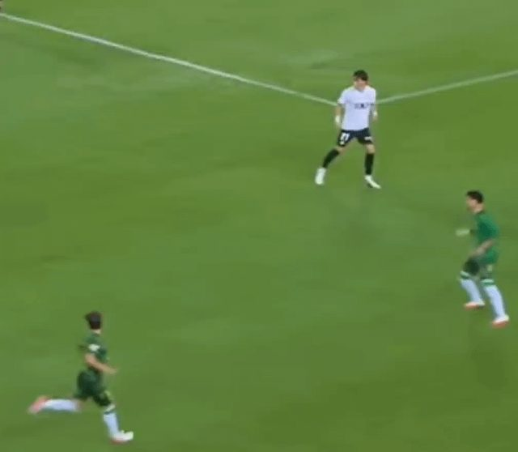
RedditMy goat never disappoints
submitted by /u/panurgio [link] [comments]
![[David Ornstein] Ipswich close to Exequiel Palacios agreement after €27.5m offer to Bayer Leverkusen](../img/x-tape/soccer/084af49b0d601a0c.jpg) Reddit
Reddit[David Ornstein] Ipswich close to Exequiel Palacios agreement after €27.5m offer to Bayer Leverkusen
Ipswich Town are close to an agreement with Bayer Leverkusen for Exequiel Palacios. The Premier League side have made an improved offer of €
 Reddit
RedditThis loss was not promised 3000 years ago
Forget Real Madrid vs Man City, this is the stuff I want out of the UCL submitted by /u/WheelSingle2494 [link] [comments]
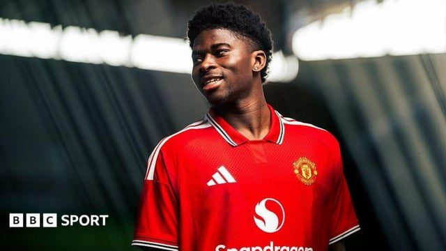
RedditCarlos Baleba: Manchester United sign Cameroon midfielder from Brighton in £70m deal
submitted by /u/dreigilb [link] [comments]
RedditHow can anyone not love this guy?!
submitted by /u/RoquebruneCapMartin [link] [comments]
RedditChelsea could sell ice to an eskimo
submitted by /u/Bohemond_Antioquia [link] [comments]
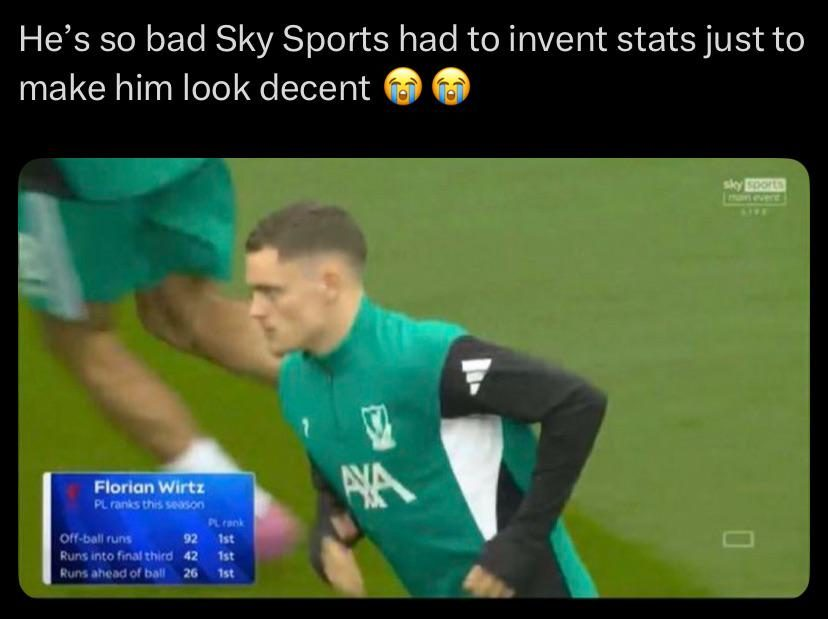
RedditLiverpool’s midfielder’s unbelievable stats
submitted by /u/cottoncandyisgood_3 [link] [comments]
RedditLeeds and Rangers co-owner jailed after prostitution arrest
submitted by /u/fre-ddo [link] [comments]
RedditAll Liam Delap Goals with Chelsea in the Premier League 💙💙💙
submitted by /u/mohamed6282 [link] [comments]
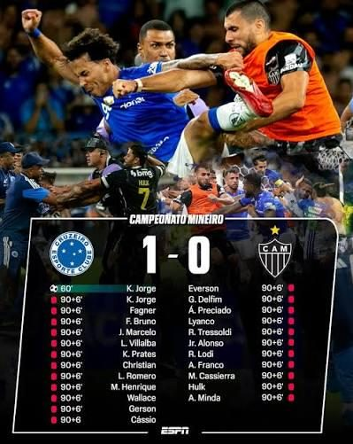
RedditJust started watching soccer,what are some fun matches like this one?
submitted by /u/van-arkride [link] [comments]
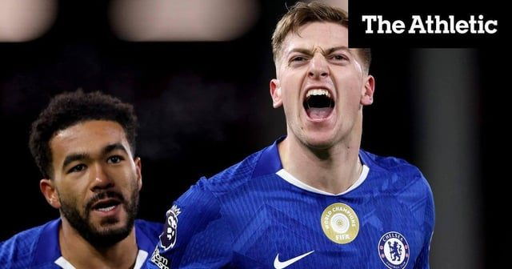
Reddit[Daniel Taylor & David Ornstein] Nottingham Forest agree club-record fee for Chelsea’s Liam Delap
Nottingham Forest have agreed a club-record fee for Chelsea striker Liam Delap. The Athletic reported on Monday that Forest were in advanced
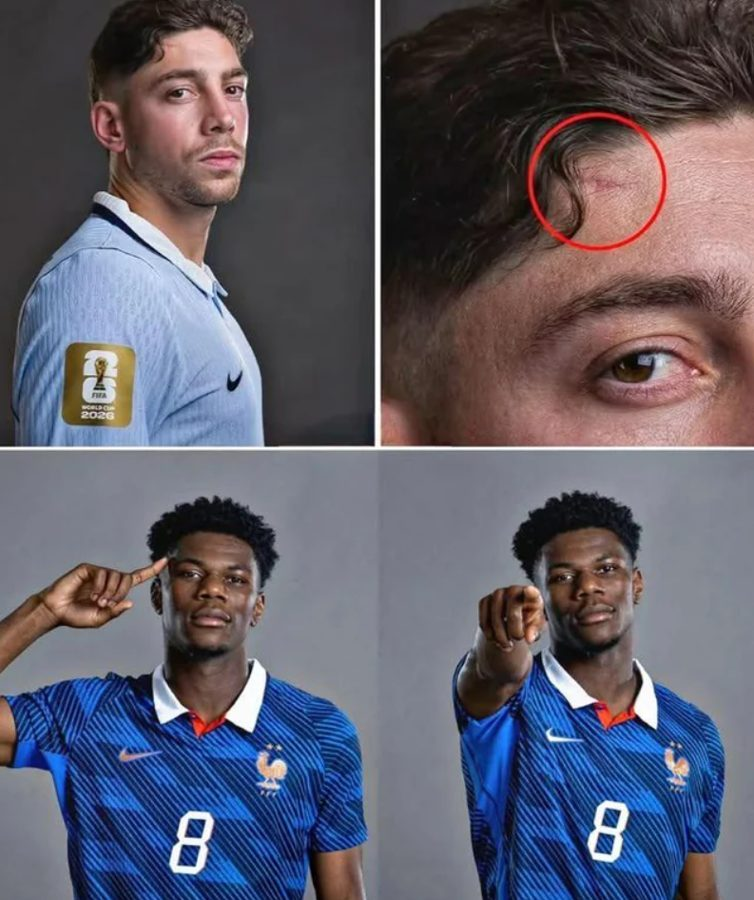
RedditSince everyone is reposting stuff, I'll repost this pic of Valverde being outjerked by Tchoumeni
submitted by /u/Sure-Gas8420 [link] [comments]
RedditPLZ help him😭
Please help him...Together we can make his dream come true! 🙏 #FreeJulian submitted by /u/Suspicious_Rub2333 [link] [comments]
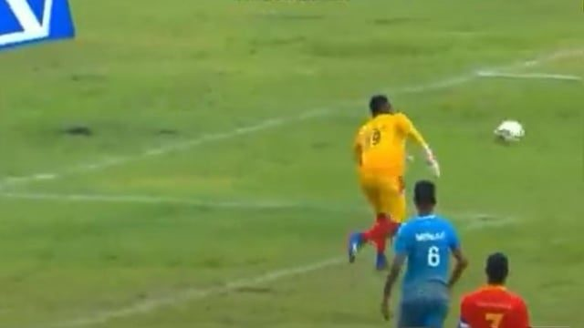
RedditAG- Attacking goalkeeper
submitted by /u/cottoncandyisgood_3 [link] [comments]
Reddit[David Ornstein] Newcastle agree deal for Manchester City’s Nico Gonzalez
Newcastle United have agreed a deal with Manchester City for midfielder Nico Gonzalez. The Tyneside club are set to pay £48million up front
RedditPaul Scholes tells Bruno Fernandes: Keep your mouth shut
submitted by /u/MoreFaithlessness954 [link] [comments]
RedditWhat kind of dere is Cristiano?
He is known to be angry but also acceptance, he is always jealous whenever someone is compared Lionel other than with him, and he always cra
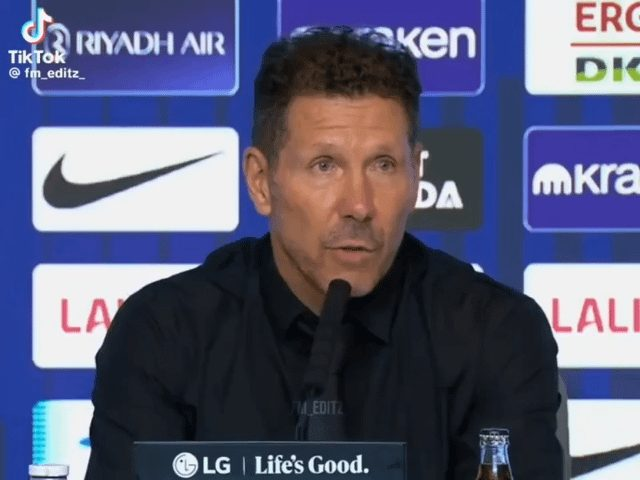
RedditIts beautiful
submitted by /u/Xdi0 [link] [comments]
RedditBro secured the bag for the next 6 years and made it his main mission to ruin Real Madrid.
submitted by /u/Concerned-Mann [link] [comments]
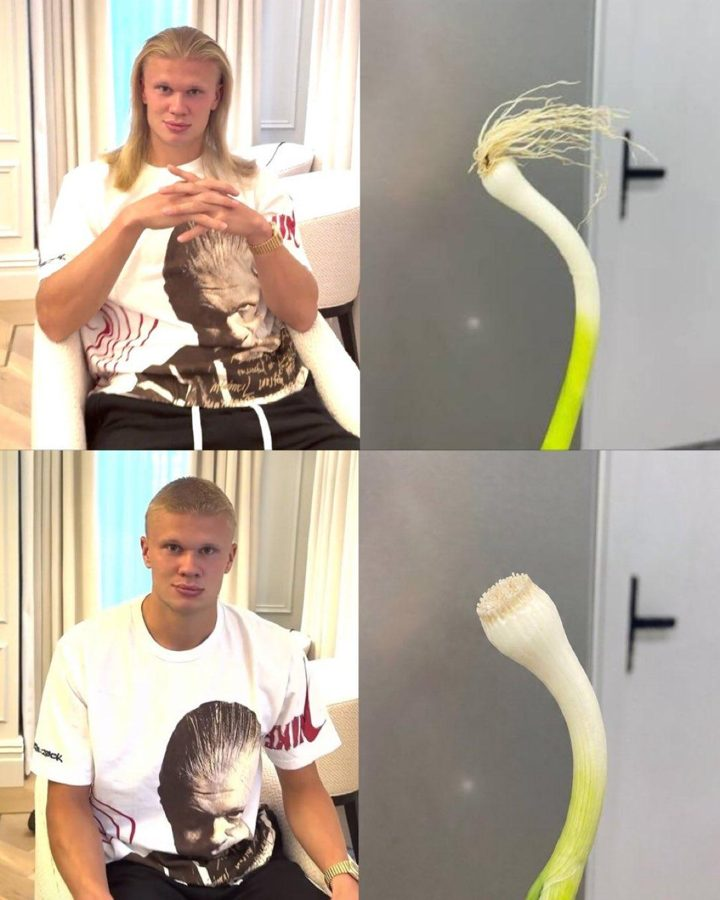
RedditBro went from a majestic Viking to an American bully💀 Games gone.
submitted by /u/L0lnator [link] [comments]
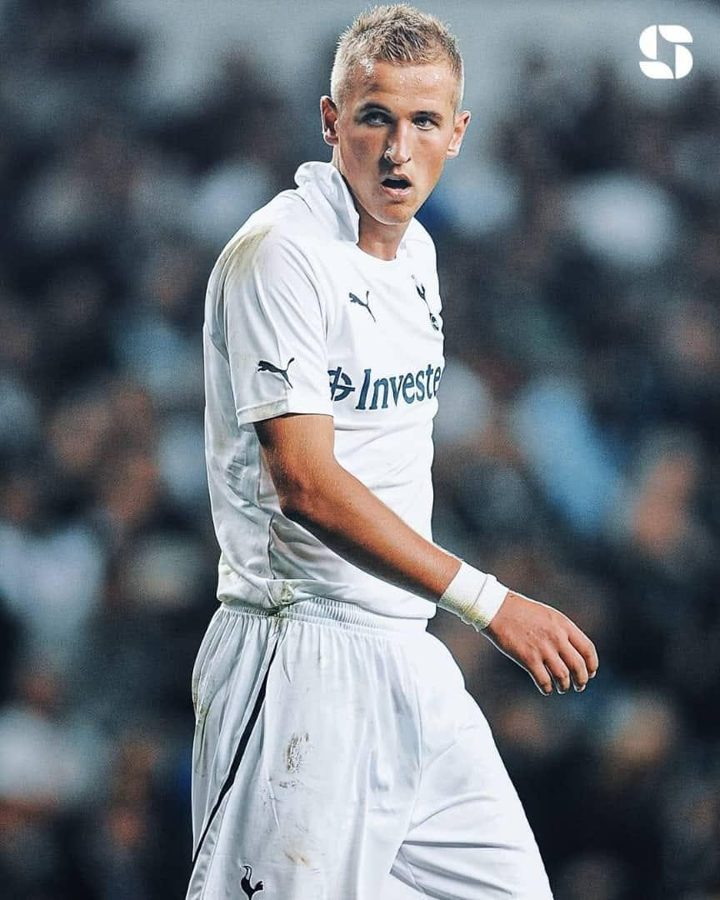
Reddit📅 ON THIS DAY: In 2011, Harry Kane made his Tottenham debut. He left the club 12 years later as Spurs' all-time top goalscorer with 280 goals in 435 appearances and ZERO TROPHIES.
submitted by /u/Cero_Miedo4090 [link] [comments]
RedditSavinho: Tottenham sign winger from Manchester City for £75m
submitted by /u/dreigilb [link] [comments]
RedditYamine Lamal
Bro's vacationing in india submitted by /u/Avis1007 [link] [comments]
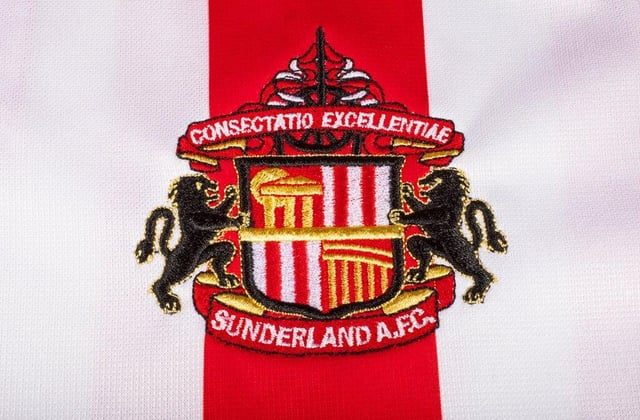
RedditIf a Season Includes a Seven, it Usually Means It Will be Eventful at Sunderland
submitted by /u/MrBlackCat77 [link] [comments]
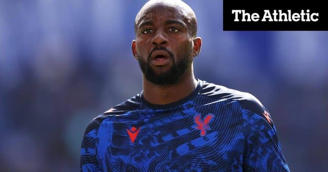
RedditAston Villa make offer for Crystal Palace striker Jean-Philippe Mateta
Aston Villa have made an offer for Crystal Palace striker Jean-Philippe Mateta. The proposal fell considerably short of Palace’s valuation o
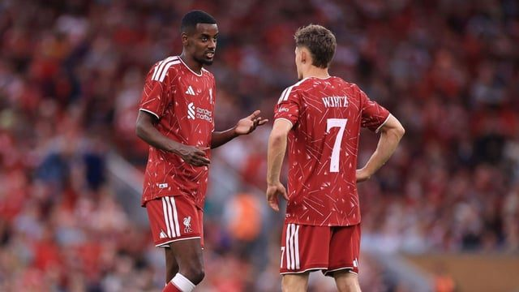
RedditJamie Carragher: Liverpool 2025 summer could be 'worst transfer window' in Premier League history
I mean... fair. Also Newcastle 2025 is a shout. submitted by /u/tylerthe-theatre [link] [comments]
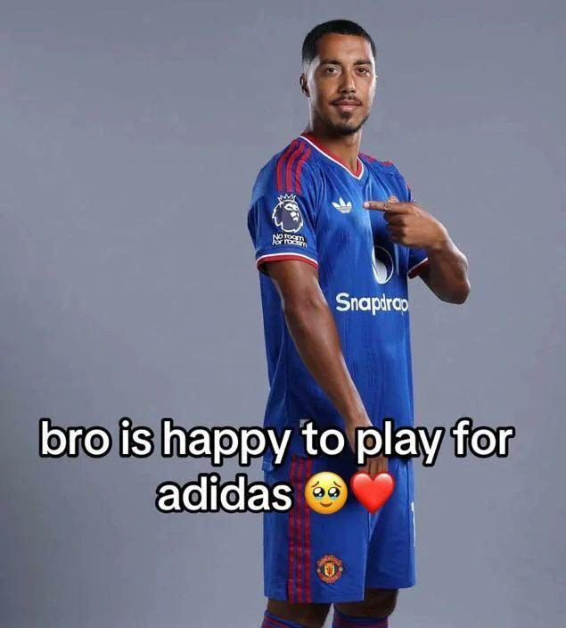
RedditUnited is so back
first Baleba, now Hellmanss, we r back baby st8 for the champions league submitted by /u/shygirl2005x [link] [comments]
RedditSorry, guys. I was the one who leaked GTA VI. If Rockstar wants to catch me, let them come. I'm Diego Simeone, manager of Atlético Madrid.
submitted by /u/Kerling74 [link] [comments]
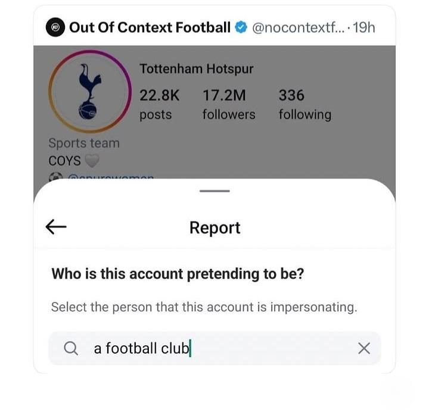
Redditimpersonating
submitted by /u/late_to_redd1t [link] [comments]
RedditWhy the fuck wasn't Xabi Alonso sent off for this are the referees stupid?
Palmer gets a pass cause he's black but wtf Xabi submitted by /u/l_____I [link] [comments]
RedditFootball gossip: Gakpo, Gonzalez, Lewis-Skelly, Scott, Mazraoui
submitted by /u/malcolm58 [link] [comments]
Reddit[Paul Taylor & Simon Johnson] Nottingham Forest in advanced talks with Chelsea to sign striker Liam Delap
Nottingham Forest are in advanced talks with Chelsea over a deal to sign striker Liam Delap. As previously reported in The Athletic , the fo